Intersection Point and Surface Normal Computation
Once all initial ray data are converted to local coordinates of the current surface, then the next step is to compute the intersection point of the rays with the surface and the corresponding surface normal at the intersection point. This can be done by analytical formulas for simple standard conic surfaces but require numerical calculation for general case. In this section we will discuss both methods as described in [G.H.Spencer and M.V.R.K Murty 1962, General Ray-Tracing Procedure]
The method for computing intersection points and surface normals involves three basic steps. To keep the analytical formulas handy, only spherical and conic surfaces are used in the analytical case. The numerical method is suitable for any surface given its implicit definition F(X,Y,Z) with the corresponding derivatives.
Step 1: Calculation of the Path Length
After the coordinate system is transferred into the local coordinate, it is convenient to determine first the intersection of the ray with the z = 0 plane.
At first, s0 is calculated by using:
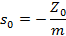
Then, the intersection point with the Z = 0 plane could be calculated as:
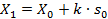
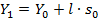
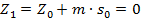
Thus, the parameter p of the distance along the ray measured from (X0, Y0, Z0) is now replaced by s0 and sf .
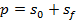
sf is measured from the point (X1, Y1, 0) to the intersection point on the surface.
When the surface is a plane, sf = 0; thus p = s0 .
But when the surface is not a plane and the additional path should be computed using the following methods :
Spherical surface: Analytic Formula
The implicit surface equation for spherical surface is given by
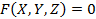
with
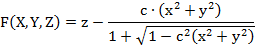.
Let the coordinates of P, the intersection point, be (X, Y, Z) and the length of the segment from (X1, Y1, 0) to (X, Y, Z) is sf = 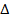 (the additional path), we have
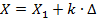
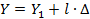
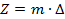
The result for the additional path is given by (See the original publication for detailed derivation)
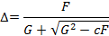
where
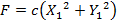
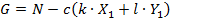
No loss of significant figures when the form is used numerically.
In this form, the value of  can be substituted to give 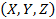, the intersection point of the incidence; this completes the transfer process.
can be substituted to give 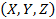, the intersection point of the incidence; this completes the transfer process.
Conic section: Analytic Formula
For simple conic sections the implicit surface equation for spherical surface is given by
with
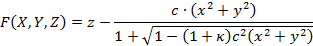
The result for the additional path is given by (See the original publication for detailed derivation)
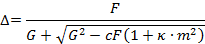
General Surface: Numerical Method
Instead of direct analytical computation, the additional path sf can be computed numerically using Newton Rampson iteration method. Using the subscript j to denote the iteration number, we write
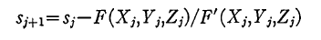
where
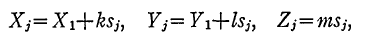
and
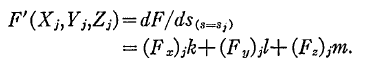
The process may be started from the first approximation
s1 = 0
and is terminated with the value sf for which
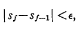
for a given tolerance e.
The above iterations usually converges fast, but if the derivative for F(X,Y,Z) becomes zero then it will not converge. Such cases are rare in practice usually occur for grazing incidence. In such cases the iteration will just oscillate and at some point will diverge to infinity. Therefore we have set the maximum iteration number set to catch such cases. In addition to that, if the ray intersects the surface in more than one point then the iteration could converge to wrong value. But such cases are rare in practice.
Step 2: Computation of the Intersection Point
After the path length is computed, the intersection points can be easily calculated using the following formulas
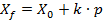
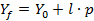
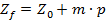
Here

Step 3: Surface Normal Computation
Before calculating the refraction, the normal vector at the surface should be calculated according to the type of the surface, the curvature of the surface, the shape of the surface, and the position of the intersection point.
Spherical Surface: Analytic Formula
The normal vector of spherical surface:
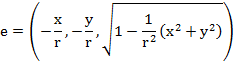
 is the radius of this spherical surface, which means we could use
is the radius of this spherical surface, which means we could use Conic Surface: Analytic Formula
For a conic section given by:
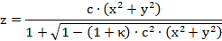
The normal vector becomes:
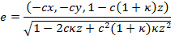
General Surface: Numerical Method
The surface normal of a general surface defined implicitly by F(X,Y,Z) is given as the partial derivative in each direction
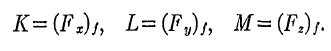
Actually the surface normal is computed as part of the numerical iteration during the intersection point computation in the 1st step.
Created with the Personal Edition of HelpNDoc: Full-featured Documentation generator